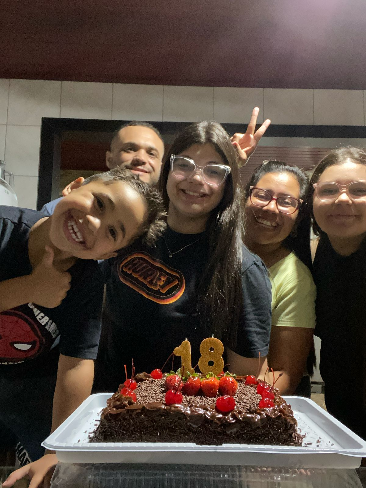
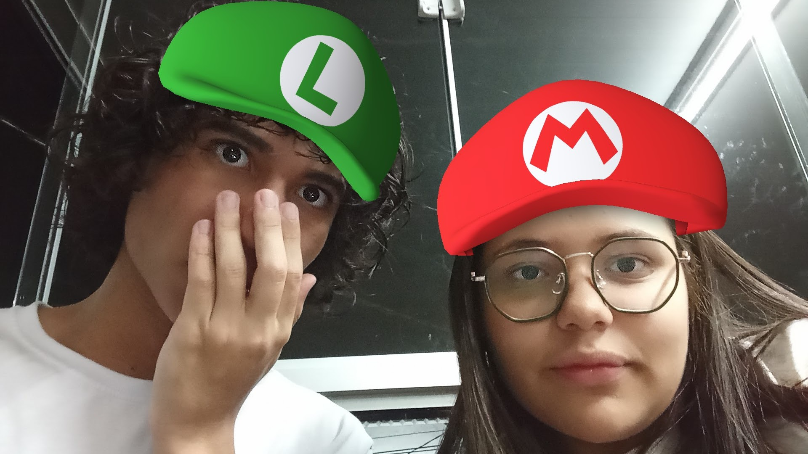
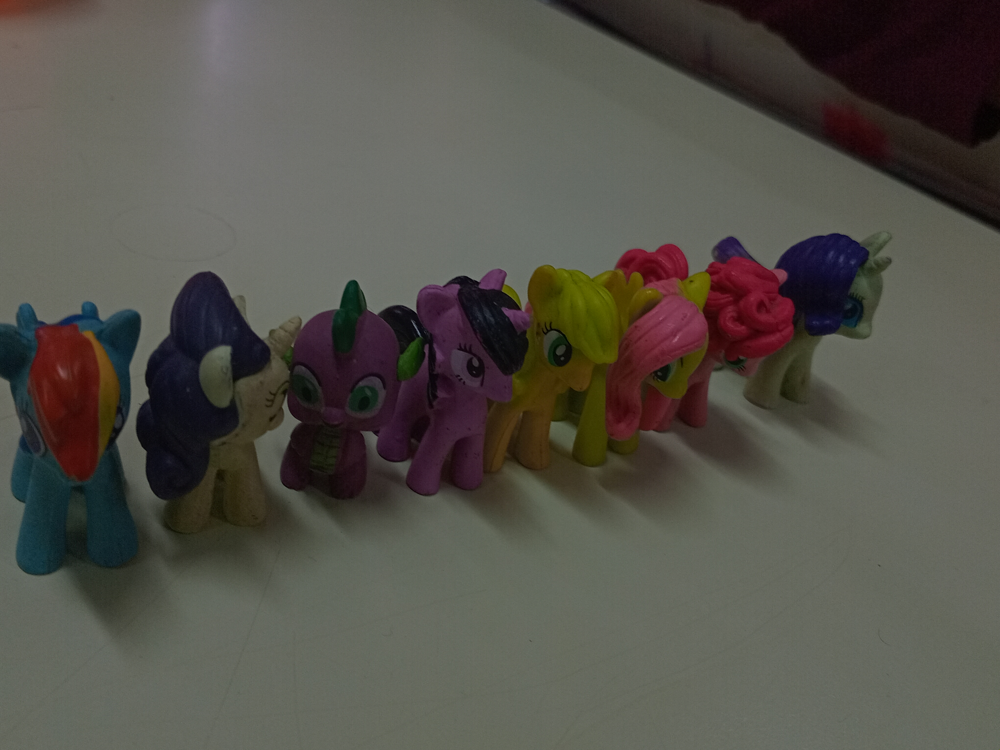
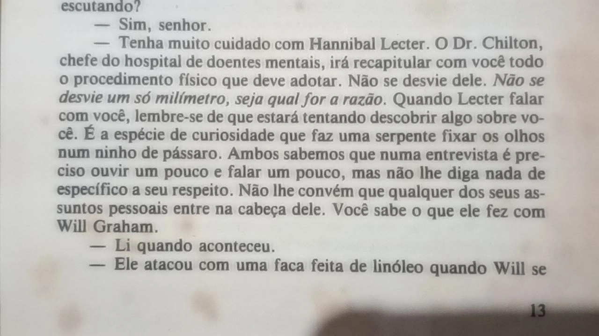
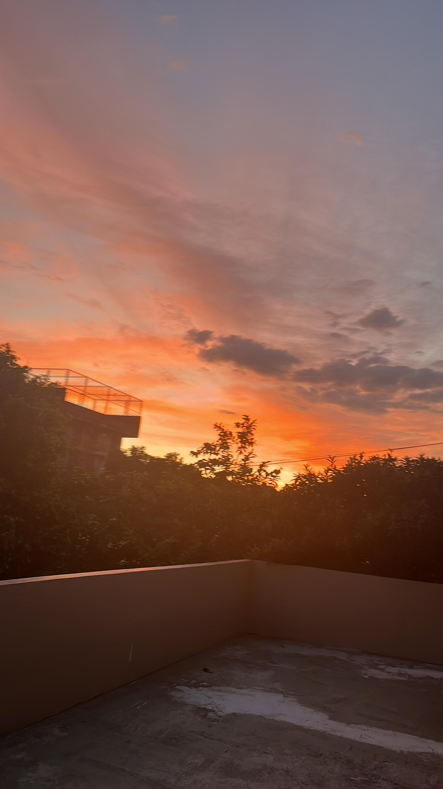
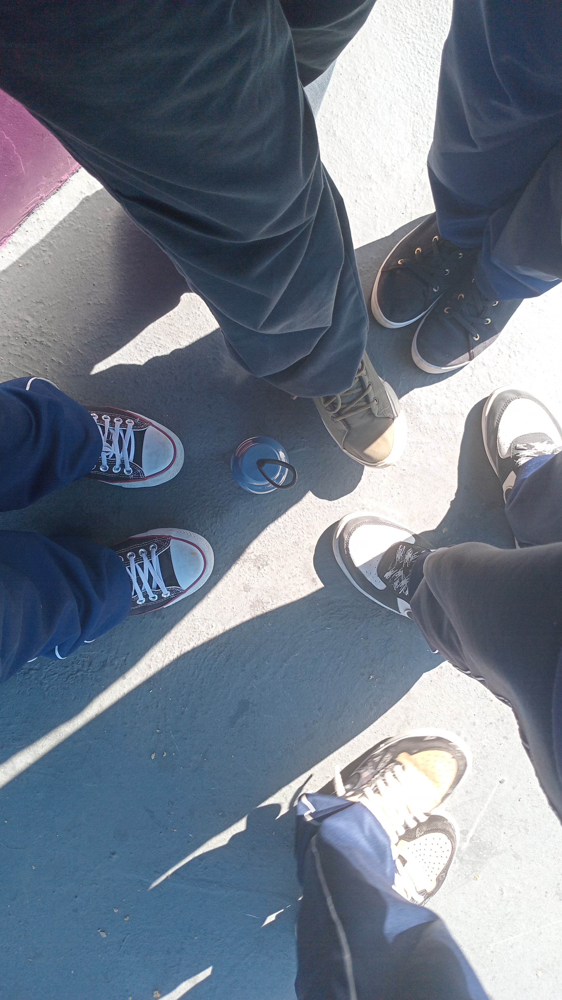

Gabriele Basilio


Se você está lendo isso é porque o código funcionou! Então vamos falar um pouco sobre mim. Eu me chamo Gabriele, mas a maioria me chama de Gabi, tenho 16 anos de idade. Eu nasci no Rio Grande do Sul, numa cidade bem pertinho da fronteira. Me mudei em 2023 para Araucária, e desde então venho me adaptando cada dia a essa cidade. Em 2025 me inscrevi no curso técnico de Desenvolvimento de Sistemas no Szymanski, e desde então venho sobrevivendo. Curiosidades: Eu gosto muito de ler, principalmente fantasia e obras filosóficas Amo ver filmes e séries, principalmente as que me fazem pensar Minha música favorita é "Like Real People Do" do cantor irlandês Hozier Pretendo cursar Farmácia para ser perita criminal, mas ainda penso muito em fazer Relações Internacionais Vivo guardando cacarecos/bugigangas que me fazem lembrar de um momento específico Tenho muito interesse em aprender novos idiomas, como lituano e francês

Sempre a gente pela gente.

Sempre preocupado com tudo.
Eu realmente amo fotos do céu.

Fluttershy, Rainbow Dash, Rarity e Twilight Sparkle!.


